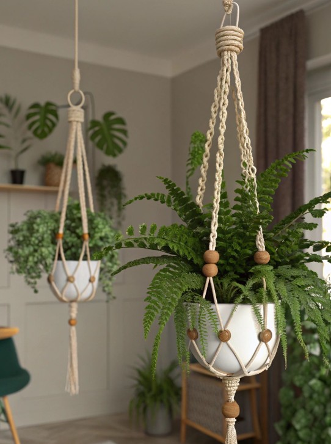
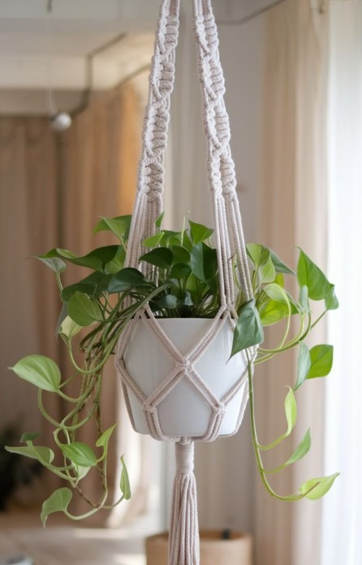
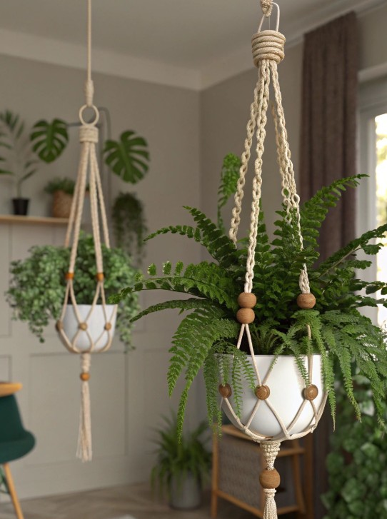
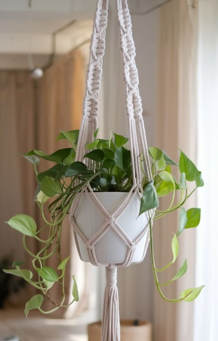

Bohemian Plant Hanger
“Lift your greens to new heights with macrame's embrace.”
Our versatile macrame plant hanger is designed to beautifully display your favorite indoor plants. Hand-knotted from durable, natural cotton, it fits various pot sizes and adds a calming, natural element to any room. Dimensions: 40 inches long (from top loop to tassel). Pot not included. Perfect for creating a green oasis.
 


